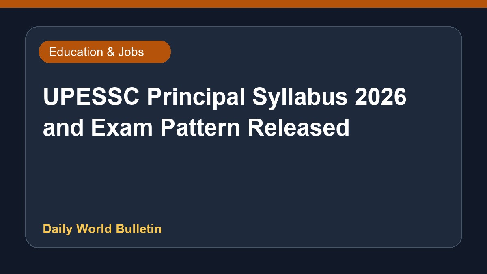

UPESSC Principal Syllabus 2026 and Exam Pattern Released

The Uttar Pradesh Education Services Selection Commission has released the revised exam pattern and syllabus for the Principal recruitment examination scheduled for 2026. Candidates preparing for this position can now check the updated details to align their preparation strategies accordingly. Official sources provide specific information regarding the curriculum and assessment structure. Since the available information is brief, further details regarding the exact topics and marking schemes remain limited.
Original source: Education News Sources
UPESSC Principal Syllabus 2026, Check Revised Exam Pattern - Adda247 ↗
UPESSC Principal Syllabus 2026, Check Revised Exam Pattern - Adda247 ↗